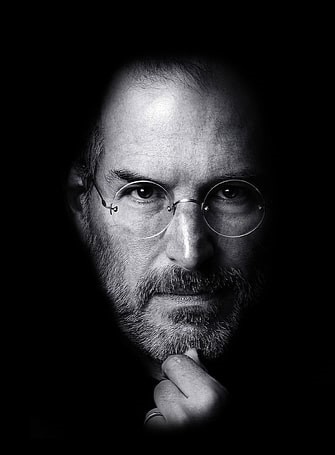

He was the founder and CEO of Apple Inc. - one of the biggest IT companies in the world. His ideas and passion for innovative inventions is celebrated by the mordern IT community. His vision and drive have forever changed computing by bringing us the Mac, the iPhone and the iPad. He achieved a lot at a very young age and inspired an entire generation of young entrepreneurs. He is respected worldwide as a role model and icon for success. His life is an ispiration for anyone who has a passion for IT innovation or entrepreneurship.
Today Apple computers, peripherals, mobile phones and other IT products are sold, used and loved by users globally. There have been numerous books written and motion picures produced about the life of Steve Jobs. His quotes are highly motivating and have been used on and off for various purposes by different individuals and business entities worldwide. The enormous contribution made by him to the IT community and the world shall always be remembered.
"Your work is going to fill a large part of your life, and the only way to be truly satisfied is to do what you believe is great work. And the only way to do great work is to love what you do. If you haven't found it yet, keep looking. Don't settle. As with all matters of the heart, you'll know when you find it."
- Steve Jobs, CEO, Apple Inc.
1955 - Steve was born in San Francisco, the son of Abdulfattah Jandali and Joanne Schieble. He is quickly adopted by Paul and Clara Jobs.
1960 - The Jobs family moves from San Francisco to Mountain View, a suburban town in Santa Clara county, more commonly known as Silicon Valley.
1969 - Steve Jobs meets Steve Wozniak, 5 years older, through a mutual friend. Woz and Steve share a love of electronics, Bob Dylan, and pranks.
1972 - Steve and Woz build and illegally sell 'blue boxes' that allow to make phone calls for free.
1976 - Woz and Steve show the early Apple I board at the Homebrew Computer Club and Apple Computer Inc. is incorporated by Steve Jobs, Steve Wozniak and Ron Wayne.
1978 - The Apple II becomes the first mass-market personal computer, with impressive sales around the US. Apple becomes a symbol of the personal computing revolution.
1985 - Steve Jobs resigns from Apple and starts NeXT with five other refugees from Apple. Apple announces it will sue NeXT.
1992 - NeXT licenses its operating system, NeXTSTEP, to run on x86 machines.
1996 - Apple, which was desperately looking for a modern operating system to buy, eventually buys NeXT for $400 million. Steve Jobs is named "informal adviser" to Apple CEO Gil Amelio.
1997 - Gil Amelio is ousted by the Apple Board of directors after a disastrous quarter. Steve Jobs is named interim CEO in his place and installs his NeXT executive team at the top of Apple.
2011 - Steve Jobs resigns as CEO of Apple, with the words 'I have always said if there ever came a day when I could no longer meet my duties and expectations as Apple's CEO, I would be the first to let you know. Unfortunately, that day has come.' Tim Cook becomes Apple CEO.
2011 - In October,The journey of Steve Jobs came to an end resting in peace.